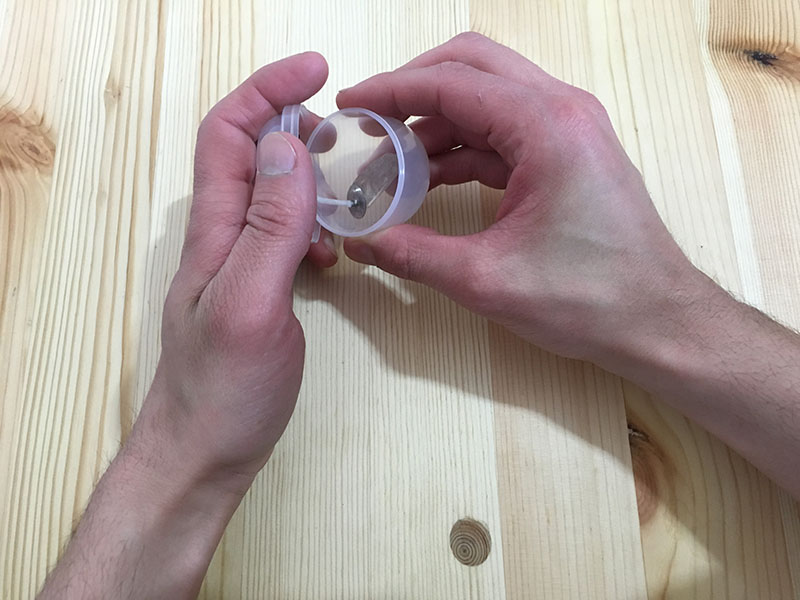
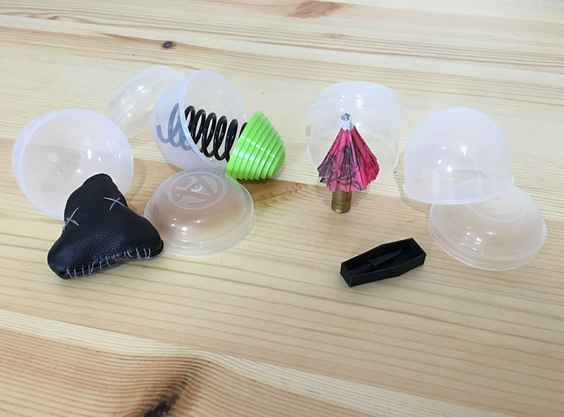

Vending Machine
Cathexis uses a toy vending machine as a modern representation of a cabinet of curiosity. The vending machine functions as a treasure box of ideas. The vending machine is filled with over 100 objects of an ambiguous nature. The game requires a minimum of 2 players and begins when each player has collected 5 objects from the vending machine. Due to the objects' ambiguity players have to use their imaginations and transcend beyond their initial understanding in order to see past an object’s standard function.
Capsules filled with mixed media objects
There is no order in which the game must be played. It begins when a player places an object in the center of the table and starts the story. Any player can jump in and take over the story with one of their objects. The game is won by ending the story and being the first person to rid themselves of all of their objects. If the other players don’t agree that the story is over then the player has to draw another object from the vending machine.

Player opening up a capsule and discovering their object

Sample of objects